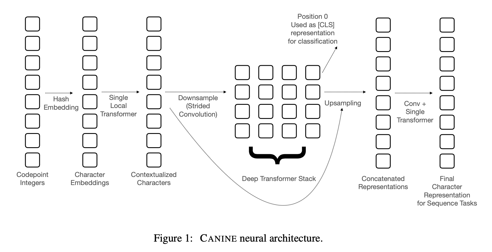

1. Read the title and make an opinion of what’s in the paper (e.g., the area, the task)
Year: 2021
CANINE: Pre-training an Efficient Tokenization-Free Encoder for Language Representation
2. Read the abstract well and form a hypothesis of
- What’s new in the paper?
- Do you have a clear overview about what the paper is all about?
Pipelined NLP systems have largely been superseded by end-to-end neural model- ing, yet nearly all commonly-used models still require an explicit tokenization step.
This is another paper proposing the benefits of dropping tokenizers and using character level representation.
They quote the advantages of this approach as benefitting multilingual tasks and the ability of the model to adapt.
In this paper, we present CANINE, a neural encoder that operates directly on character sequences—without explicit tokenization or vocabulary—and a pre-training strategy that operates either directly on characters or optionally uses subwords as a soft inductive bias.
They present two contributions, the model architecture and the pre-training strategy. I curious about the meaning of the subwords being used as a soft inductive bias.
To use its finer-grained input effectively and efficiently, CANINE combines downsampling, which reduces the input sequence length, with a deep transformer stack, which encodes context.
It is key to reduce the input sequence length because without the tokens, you will have proportionally larger sequences, which the transformer stack will have a harder time to model if sequence is too large.
3. Look at the images and extract a set of “questions” about what is not clear about their method from the images. Now your job is to answer these questions by reading the paper.
I’m not sure what their point is of table 1, but it shows how flexible languages can be compared to English, which is where most of the research in NLP is being done.
Fig 1 presents an architecture which to me is a bit hard to discern. What I assume as a key connection is the residual connection between the downsample and upsampling, however, it is not entirely clear that is what it is. But this figure is as expected, with a long sequence input, a downsampling, to transformer, and a few interesting blocks to get it back to the original character length.

This really makes me wonder how our minds ingest text. Is it ultimately at a character level, and words come after an unconscious conversion that is relatively fixed, but allows for nuance, such as beingabletoputwordstogetherwithoutspaces. We can still read that.
I want to see if I can find a bit more about each piece they are proposing.
4. Read the method aiming to answer your “questions” about the paper. Focus on understanding only the things relevant for the story (i.e., to understand the contribution).
The overall form of the CANINE model is the composition of a downsampling function DOWN, a primary encoder ENCODE, and an upsampling function UP
The paper uses a Character Hash Embedding to convert to unicode characters with relatively small numbers of paramters.
Downsampling The downsampling is interesting because they precondition the embeddings with a single local transformer.
They did not comment directly why they chose to use the local transformer for this step. I would think the downsample would be fine without it, but maybe that leads to the fact that this initial encoding is important.
Deep transformer stack This is the expected meat of the model using a BERT like model.
Upsampling: In order to perform some tasks, a matching input to output representation must be computed. The upsampling step lifts the latent space up to the original input dims for tasks such as tagging and span prediction.
I am not clear exactly where the vector concatenation happens of the representations to upsample.
Residual Connection They note that they do not use residual connections for the proposed model. Obviously they tried it and it did not perform as well as without.
Pre-training: There are two tasks they use for self-supervised learning: 1. Span-wise masking (like MLM) and 2. Span Prediction (like GPT).
5. Read the experiments to convince you that the show results are caused by their claim. Be aware that the experiments highlighted are the best scenarios and are fully hyper-parameter tuned.
Table two shows their main results. I wonder how this compares with ByT5, as they are comparable in solution design.
6. Make sure you answered all your questions. Did the authors convince you that their story has the effect that they claim?
I had to quickly speed through this one, and they clearly have positive results, but it is hard to compare to other SOTA techniques in terms of performance.
They had a good collection of ablation studies to look through, even though I didn’t comment on any of them.
I do see the writing on the wall for removing tokenizers, but I wonder if it will be solved by increased attention flexibility or this proposed U-net architecture they have shown. My gut leans towards full attention, but who knows?